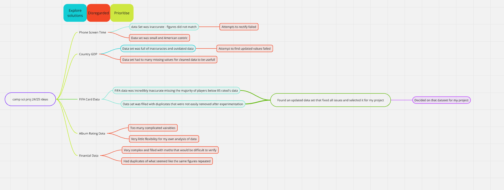
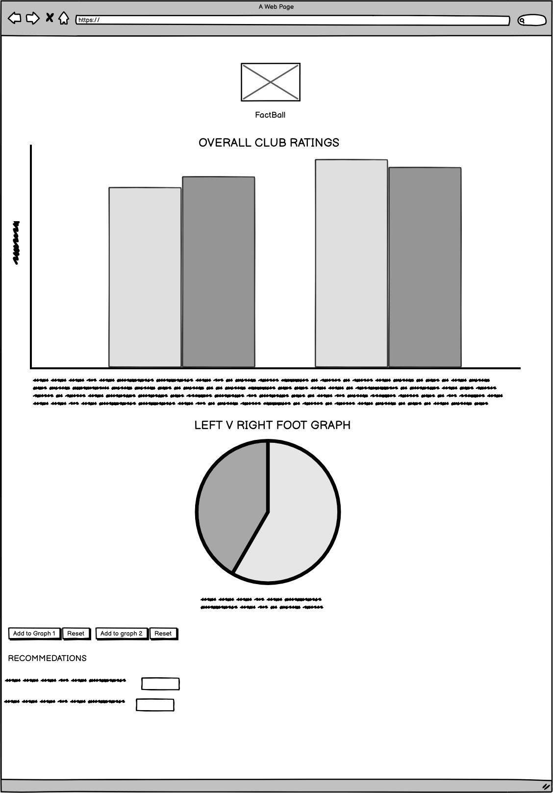
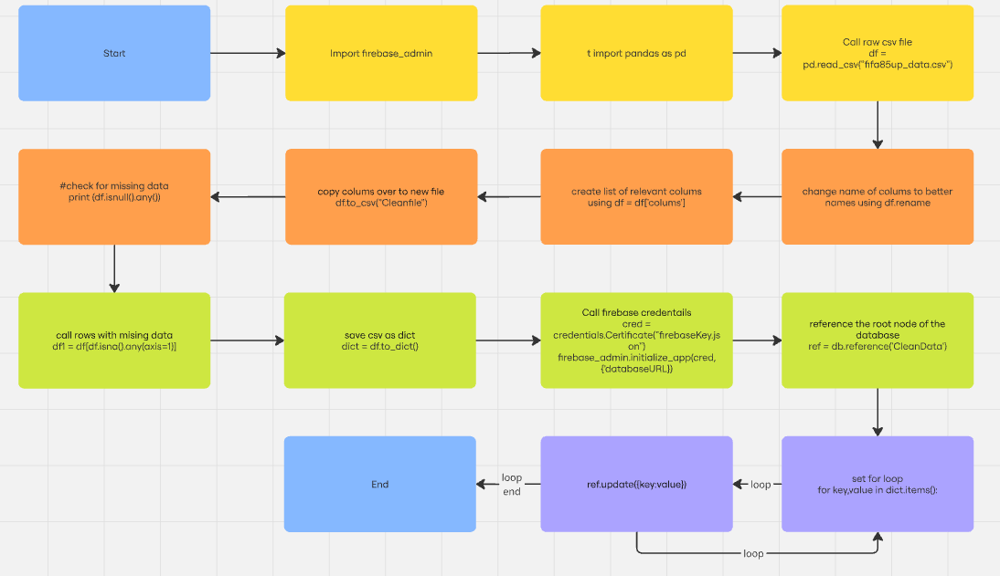
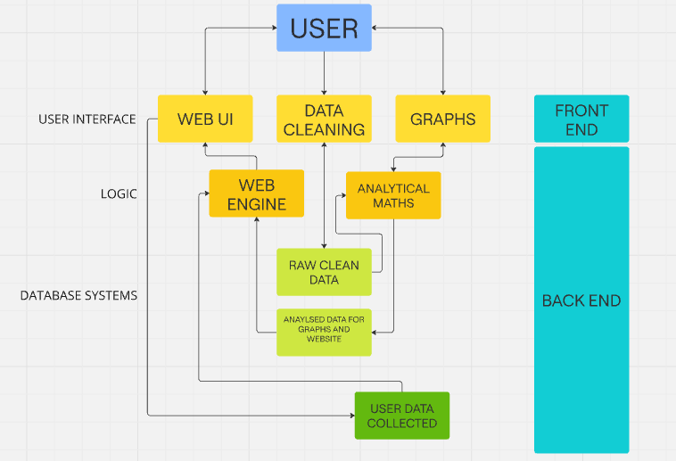
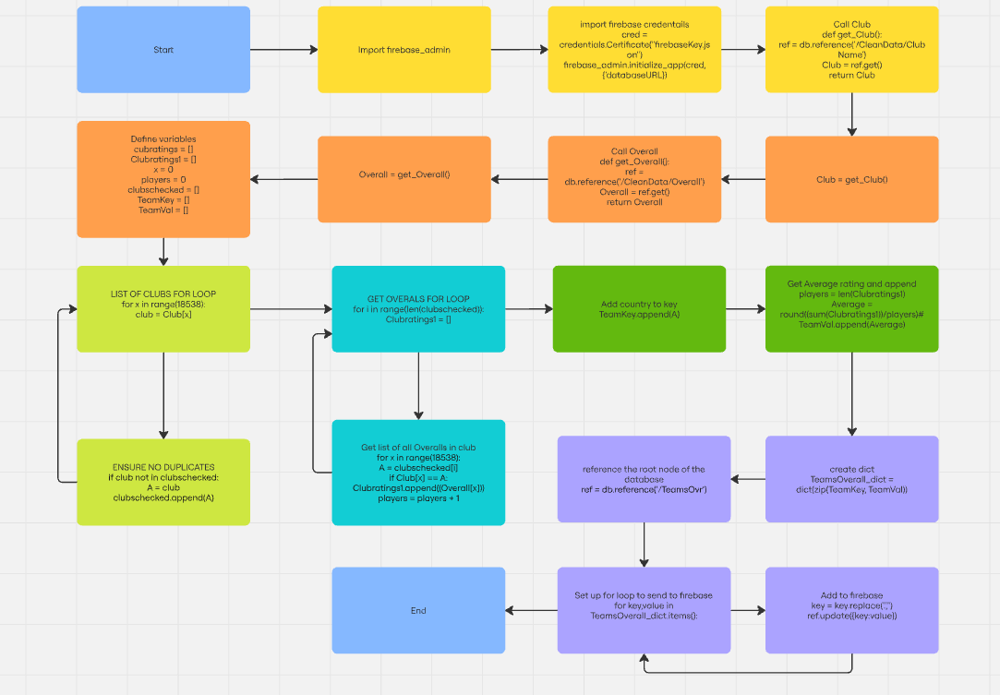
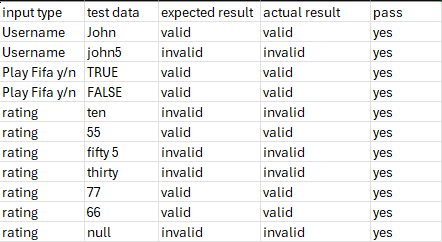

Hello my information system deals with Fifa Football stats based around clubs and nations.
This is something I was interested in as I have played the Fifa games for a large portion of my life
To Meet the brief I will first show how I collected prepared and cleaned the data
This is my FIFA database on Kaggle,
I save it as a csv file and place it in my project folder
I then create a python file in thonny and save it in the same folder.
I downloaded firebase admin as an extension and imported it at the top of my file
I then downloaded pandas a data cleaning extension and import that also
On line 8 I set df to be pandas read function of my csv file
After that I save df as a new dataset containing only the columns that I intend to use which I then on the following line convert to a csv
Next I use the df.isnull function to check for missing data followed by the df.isna to call rows with missing data.
As I found that my dataset did not contain any missing variables this code served only to confirm that.
I then save df as a dictionary PlayerData_dict
I then call my key for my firebase and set its address
Afterwords I set ref as my root node of the database and upload the dictionary for its key and value
Data analytics and visualisation
This file contains my analytics which is basic requirement 2 a
First I created a piece of code that would find a teams overall average score based on player ratings.
I did this by creating a list of every club and saving it as clubs checked.
Then for every club I went through the database accepting players from that team, adding their overall stats and then dividing by the number of players in the club to find the average.
I then saved this as a dictionary displaying clubs as a key and their average overall rating as the value and uploaded it to firebase
I the used matplotlib to display this information in a bar chart form. Although it looks cramped in python when implemented into an interactive graph using chart js it is much clearer.
I then used similar code to find how many players from each nation were left footed and right footed I displayed this on a pie chart. The reason I chose a pie chart for this information was because I wanted its interactive version to operate as a means to compare.
basic requirement 2 b states Ensure that each visualisation is clearly labelled with titles, axis labels, and legends where appropriate
Both of my graphs in python have clear titles, my bar chart has its axis clearly labelled, my pie chart has all relevant information.
On my web page both graphs have clear titles and the x and y axis of my bar chart is labelled. My pie chart is colour coded between left and right
2c
For my graphs in python I pull my data from my firebase in the form of a list that displays a collum
Advanced 1
Users are able to interact with both graphs on the main page of the website by hovering over an element, adding items to the graph and resetting the graph, the principle of user interface design I am using here is feedback
2a and b
I have created a form as a survey users input a string, Boolean and integers which are then saved to firebase by using javascript
2c
Users inputted stats are then called back from firebase and displayed on two radar graphs one displaying the users input and one displaying the average users input.
Recommendations are displayed at the bottom of the main page, the user can input a club and receive its average player rating or they can enter a nation and receive the average player wage from that nation the principle of user interface design I have used her is user control
Investigation
I began my investigation into interactive information systems that display analytics based on data by searching for examples across multiple different websites listed in the brief in particular I found the covid 19 website https://covid19ireland-geohive.hub.arcgis.com/ to identify how large quantities of data can be shown and in what ways these graphs can be made interactive. My main reasons for this revolved around trying to piece together what this project should end up looking like and the scope of the data use. The way the data was displayed on these examples were key in my design process for my own inspiring me to search for a larger data set as I was fond of the way in which the data was laid out when in a large quantity. This is also what set me towards financial data sets and eventually on to the one that I chose.
I then began my searching through https://www.kaggle.com/datasets a large collection of publicly available datasets for a dataset that interested me. As per my ideas on how I wanted to display my data I began focusing in on large datasets, mostly bases on financial topics, however after analysing a variety of different options I began to eliminate datasets that were less viable and working on solutions to datasets with issues I felt I could clean. After weighing up the pros and cons of each dataset I ended up selecting a dataset based on football players from the game FIFA and many of their stats, attributes and other facts. I was satisfied with the variety of data displayed and with its format, however when converted into a csv file there were many errors. Although at first I thought that the dataset would be unusable a brief search brought me to an updated version that had fixed the errors. Once I had this new dataset I began examining it for its own faults and merits and found it to be superior to the original in the scope of its data.
This flowchart displays my process of elimination in choosing my dataset

What I intend to analyse is the average overall ratings of football clubs taking into account the ratings of each individual player on the team. I will also be analysing the average wage, player rating and foot for players in each nation
This dataset will be targeted towards people who play FIFA or who are interested in the way FIFA grades football clubs and players stats
The dataset I selected was based around the around stats from the football video game FIFA. These stats are collected and maintained by a large number of data reviewers and talent scouts from all over the world. I chose this particular dataset because FIFA has played a central role in my life and the lives of many young people who have grown up with the annual realising game linking heavily with real life interests in football and dominating console gameplay of the youth for almost three decades. My target audience is primarily young males with an interest in football from the ages of 12 and upwards.
Basic Requirements: I will save my dataset as a csv file so that I am able to extract the information using python. I will use the extension pandas on python to clean my data and save the relevant information on to a new csv file. I will then send this information to my Firebase. Firebase is a tool which stores data online which I will be using to connect my python and JavaScript code, it also is able to update in real time which becomes particularly useful for my form. The mathematical analysis I do in python will be used to make graphs displaying my findings using matplotlib and to make my recommendations. I will also send it to firebase to be used in my website
Advanced requirements: I will create two interactive graphs, the first one will display the average overall rating of a football club based on the ratings of its players. I will then include an option for any of these clubs to be compared on a bar graph, this will give an insight into what teams are on average better options for players to choose when playing the video game FIFA. The second graph will be empty when first seen as users will input any nations number left or right foot players onto a pie chart so that a comparison can be made. Left and right footed sections will be two different colours and a reset button will be present. I will show these graphs using chart.js as it is a highly customisable extension that allows for near total user control over design.
I Will then make a user survey that asks for a string, Boolean and integer. I will user firebase and java script to allow users to submit their survey and I will then display the results on a radar graph.
I will also used the aforementioned mathematical analysing to create two recommendations cantered around Average nation wages and Average Nation player ratings
WEBSITE WIREGRAPH

DATA CLEAN FLOWCHART

SYSTEM ARCHITECTURAL DIAGRAM

Average Team Overall rating

Form validation truth table

CREATE
Week1: I began to read through the brief and examined many of the examples to begin to generate ideas for my dataset. I also began searching for a dataset
Week2: I began analysing data sets I found that interested me, chose one and began writing up my investigation and creating a flowchart of my process of elimination that is shown in my investigation.
Week3: I started to clean my data using pythons panda extension I started by renaming collums and moving the ones I wanted to use to a new csv file. I began to properly plan how I was going to use my data.
Week4: I began my mathematical analysis of my cleaned data experiment and created my graphs using matplotlib which assisted me in my planning and gave me a vision to work towards with my interactive graphs.
Week5: I finished my analysis and then uploaded it into firebase and began working on my html page. I then finished my plan and design element of my brief
Week6: I extracted my data from firebase and used it to create my first bar graph using matplotlib which I then worked towards making interactive. I also began on creating my second graph a pie chart.
Week7: I finished making both my graphs and making them interactive I then moved on to my recommendations and creating a survey form page
Week8: I Finished my recommendations and began working towards displaying the user’s inputted data from the survey onto a graph. I also worked on validation
Week9: I finished my validation and continued to work on my graph ensuring that submissions saved onto firebase would be properly displayed
Week10: I finished my survey graph and added hyperlinks so users could move from one page to the other.
Week11: I began my testing process and identified any errors in my code and also to test for any weaknesses.
Week12: I finished any debugging needed making sure all analysis was correct, made final adjustments and worked on the aesthetics of the website.
Issues I ran into while working on the problem.
While coding for my mathematical analysis on python I ran into many problems due to the nature of the data base I was using. Because the information on the data base was stored in relation to each player with each player being a row, it made it extremely difficult for me to extract the data I needed to use as I wanted to extract information based on specifically nations and clubs. This meant that if I wished to obtain information regarding a singular club or nation, I could not simply extract all data related to a row or collum. This issue became especially complicated when I needed to create dictionary with the key being all clubs/nations and the value being the particular piece of information I needed for each. To resolve this issue I had to create two pieces of code that would create a list for all nation/club names respectively by storing the first instance each one appeared as a string and checking it against any further entries to prevent duplicates and using that list in another piece of code to run through the database selecting whatever data was relevant to each nation or club storing that in a corresponding list where each index value would correspond to the correct nation/club. From that point a dictionary could be made that had all of the correct information which allowed me to continue on to both upload that data to firebase and use it in my graphs.
To summarize due to the way the csv file was formatted I ran into an issue where I could not easily obtain data directly related to nations and clubs, serving as a significant roadblock to my progress as I has planned on using that information in my graphs. This experience exemplified the importance of testing process to me as any errors in this would have resulted in the complete redundancy of both my interactive graphs and my recommendations.
Algorithm for compiling a dictionary of clubs (creating the initial list of clubs to be ran through )and the average player rating(the sum of the overall rating of each player in the club divided by the total number of players)
Here is my pseudocode representing this
cubratings = []
Clubratings1 = []
x = 0
players = 0
clubschecked = []
TeamKey = []
TeamVal = []
print("start")
for x in range(18538):
---club = Club[x]
---if club not in clubschecked:
--------A = club
--------clubschecked.append(A)
for i in range(len(clubschecked)):
----Clubratings1 = []
----for x in range(18538):
--------A = clubschecked[i]
--------if Club[x] == A:
------------Clubratings1.append((Overall[x]))
------------players = players + 1
----TeamKey.append(A)
----players = len(Clubratings1)
----Average = round((sum(Clubratings1))/players)
----TeamVal.append(Average)
TeamsOverall_dict = dict(zip(TeamKey, TeamVal))
Evaluation
In this project I explored various aspects of clubs and nations from the videogame FIFA by analysing the dataset Fifa 23 players. Using various tools in python such as pandas for cleaning data, matplotlib for representing it and firebase to both store and pull form the data. I used interactive graphs using JavaScript and chart.js to make my information more engaging. My main focus of this project was to look at the relationship and disparity of the different clubs and nations in Fifa. I looked at aspects such as average overall ratings of players, average wages and number of left and right footed players to examine if certain trends existed between various clubs and nations. An exceptionally interesting part of my project was examining the different average wages based on nation as shown in my recommendations. I made interactive graphs in which you could add teams and compare their overall player ratings as well as a graph in which the user could compare the number of left footed and/or right footed players from any nation they chose helping users identify similarities and differences between different nations footballers
Altogether this project provided an intriguing perspective into the similarities and differences between different clubs and nations in terms of Fifa football, benefiting players in their choices in game and those who simply value that much of the data translates into rea life due to FIFA’s meticulous data collection
If I were to make an improvement I would have upgraded the scope of my comparisons perhaps allowing for the comparison of individual players also.